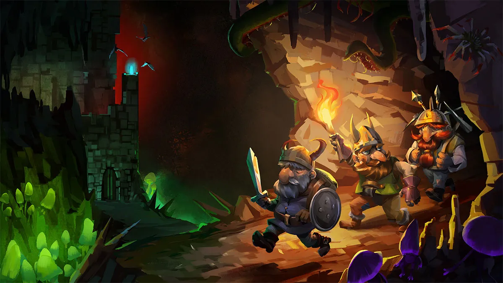

Главная | Страница 1 | Страница 2 | Страница 3 | Страница 4
Популярность Dwarf Fortress привела к возникновению игр-подражателей, в той или иной степени воспроизводящих формулу игры, но отличающихся более современной графикой и меньшей сложностью обучения; подобным образом описывали такие игры, как RimWorld, Stonehearth, Gnomoria и Oxygen Not Included. Создатель RimWorld Тайнен Сильвестр писал, что был очарован историями игроков в Dwarf Fortress и хотел создать нечто подобное, но при этом сделать собственную игру более доступной и избежать тех ловушек в области геймдизайна, в которые, с его точки зрения, попала Dwarf Fortress. Тарн Адамс говорил в интервью журналу PC Gamer, что знает о существовании игр-подражателей, но никогда не играл в них и даже не хочет с ними знакомиться. Dwarf Fortress была одной из игр, повлиявших на создание Minecraft, одной из самых популярных компьютерных игр в истории; создатель Minecraft Маркус Перссон изначально желал создать игру, подобную Dwarf Fortress, более простую и доброжелательную к новичкам; успех Minecraft, в свою очередь, оказался выгодным и для Dwarf Fortress, обеспечив приток в игру любопытствующих игроков.

Разработчики ряда других игр выражали восхищение творением братьев Адамсов. Создатель Magic: The Gathering Ричард Гарфилд посещал встречу поклонников Dwarf Fortress в Сиэтле, чтобы встретиться с Тарном Адамсом. В марте 2013 года Нью-Йоркский музей современного искусства включил Dwarf Fortress вместе с ещё несколькими играми в свою коллекцию, посвящённую истории компьютерных игр как формы искусства. В то время как другие игры в коллекции музея поддерживаются в первоначальном состоянии, как можно более верном эпохе, когда была выпущена игра — так, Тетрис запускается на компьютере Apple 1980-х годов — Dwarf Fortress обновляется с помощью автоматического скрипта: если все другие копии Dwarf Fortress в мире будут неким образом утрачены, музей должен сохранить эту игру. Старший куратор музея Паола Антонелли объясняла выбор именно этой игры для выставки поразившим её сочетанием «чудесной эстетики» и «головокружительной сложности».